Candidate List 20260322 Previous Day Next Day Section 1: New Sources (age<1d) Cosmological Afterglow
Section 2: Old (1-5d) sources observed last night placeholder
Section 1: New Afterglow/FBOT Cands Last Night (1)
1. ZTF26aaonfno (FBOT?) [Back to Top] [Share] [Trigger Swift] [Fritz ] [Lasair ]RA, Dec: 150.89806, 24.00961 10h 3m35.53s, 24d 0m34.60sGalactic (l, b): 208.0287, 52.19169 ext(g-r) = 0.034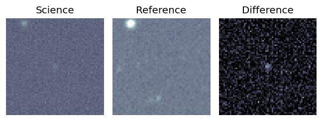
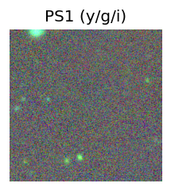
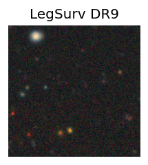
LegacySurvey: 1 sources in 3 arcsec Closest: d = 0.49 arcsec, 135.7 deg (east of north) photoz=0.65 (68% bounds 0.48, 1.04), type=PSF peak abs mag = -23.29 (68% bounds -22.49, -24.54) 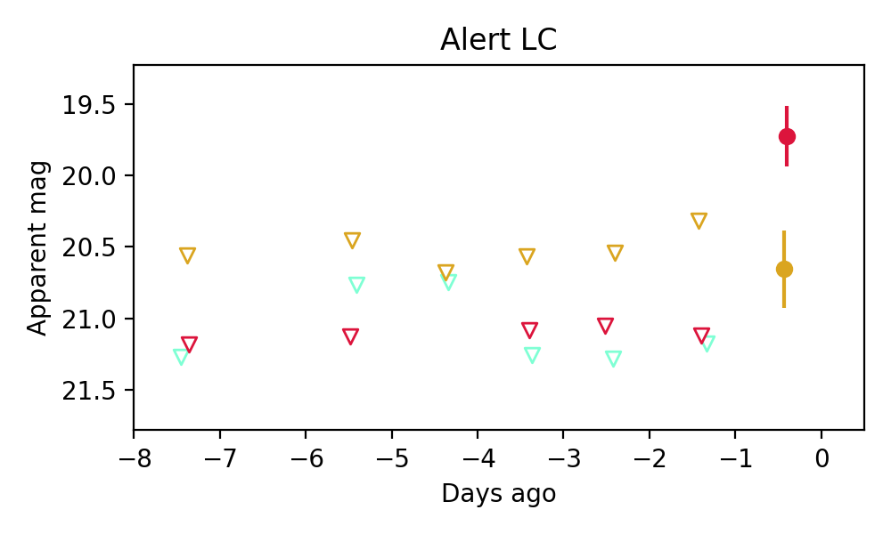
Section 2: Older Sources Observed Last Night (25)
0. ZTF26aamitpu (Afterglow?) [Back to Top] [Share] [Trigger Swift] [Fritz ] [Lasair ]RA, Dec: 212.99223, 55.40955 14h11m58.14s, 55d24m34.38sGalactic (l, b): 101.17538, 58.18557 ext(g-r) = 0.017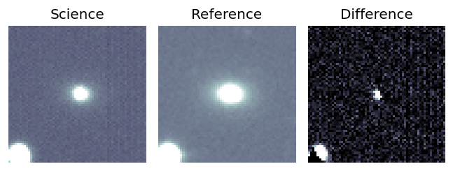
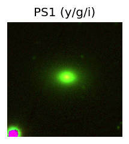
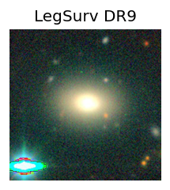
peak abs mag = -19.05 LegacySurvey: 1 sources in 3 arcsec Closest: d = 1.18 arcsec, 307.0 deg (east of north) photoz=0.04 (68% bounds 0.04, 0.04), type=SER peak abs mag = -18.61 (68% bounds -18.42, -18.83) 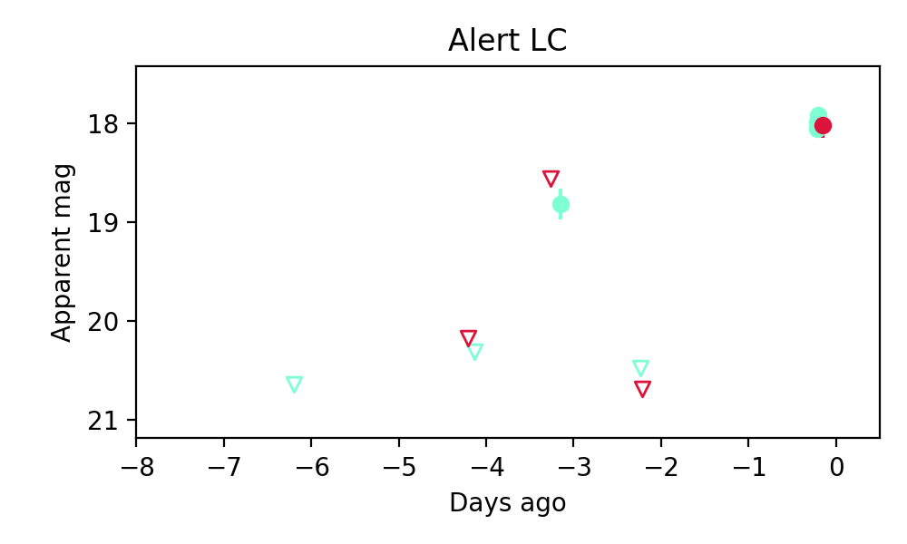
Consistent with synchrotron, g-r>0!
1. ZTF26aamiwuj (Afterglow?) [Back to Top] [Share] [Trigger Swift] [Fritz ] [Lasair ]RA, Dec: 283.02126, 43.08664 18h52m5.10s, 43d 5m11.91sGalactic (l, b): 72.75117, 18.03807 ext(g-r) = 0.107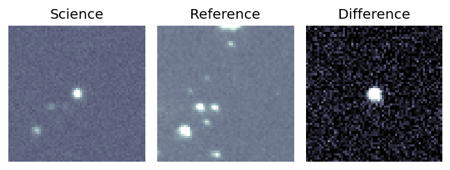
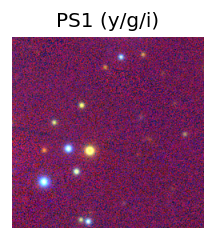
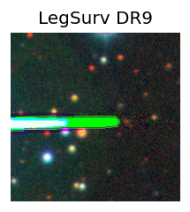
LegacySurvey: 1 sources in 3 arcsec Closest: d = 6.66 arcsec, 0.4 deg (east of north) photoz=0.52 (68% bounds 0.25, 0.72), type=REX peak abs mag = -25.61 (68% bounds -23.69, -26.44) 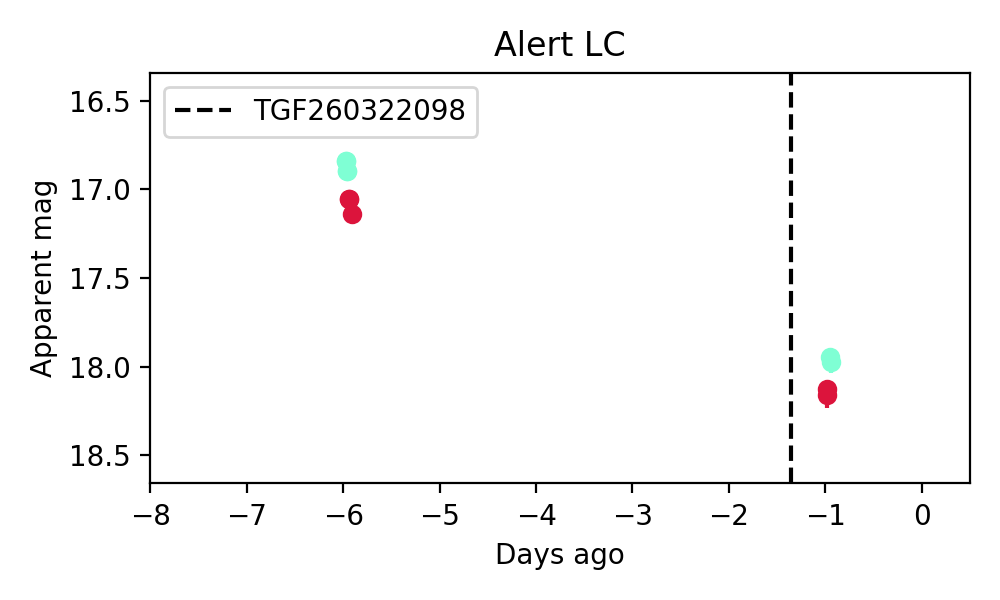
2. ZTF26aamqibe (FBOT?) [Back to Top] [Share] [Trigger Swift] [Fritz ] [Lasair ]RA, Dec: 170.82966, 34.37731 11h23m19.12s, 34d22m38.33sGalactic (l, b): 186.53409, 69.78081 ext(g-r) = 0.026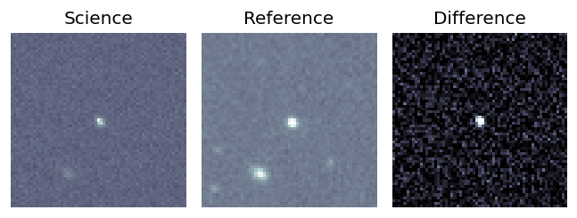
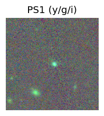
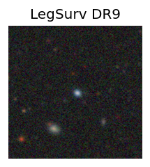
peak abs mag = -19.97 LegacySurvey: 1 sources in 3 arcsec Closest: d = 0.86 arcsec, 53.7 deg (east of north) photoz=0.89 (68% bounds 0.58, 1.15), type=REX peak abs mag = -25.71 (68% bounds -24.6, -26.4) 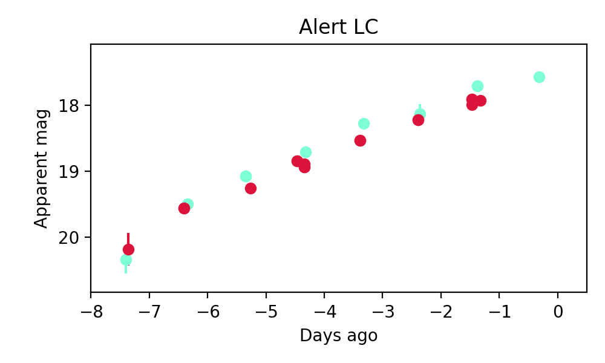
Consistent with synchrotron, g-r>0!
3. ZTF26aamqluf (Afterglow?FBOT?) [Back to Top] [Share] [Trigger Swift] [Fritz ] [Lasair ]RA, Dec: 183.74219, 63.7879 12h14m58.13s, 63d47m16.42sGalactic (l, b): 129.58969, 52.86639 ext(g-r) = 0.022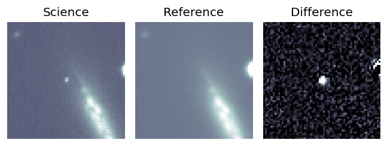
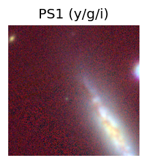
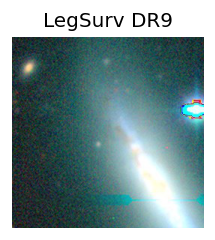
peak abs mag = -19.69 LegacySurvey: 1 sources in 3 arcsec Closest: d = 5.62 arcsec, 141.9 deg (east of north) photoz=0.02 (68% bounds 0.01, 0.05), type=PSF peak abs mag = -19.61 (68% bounds -17.14, -21.64) 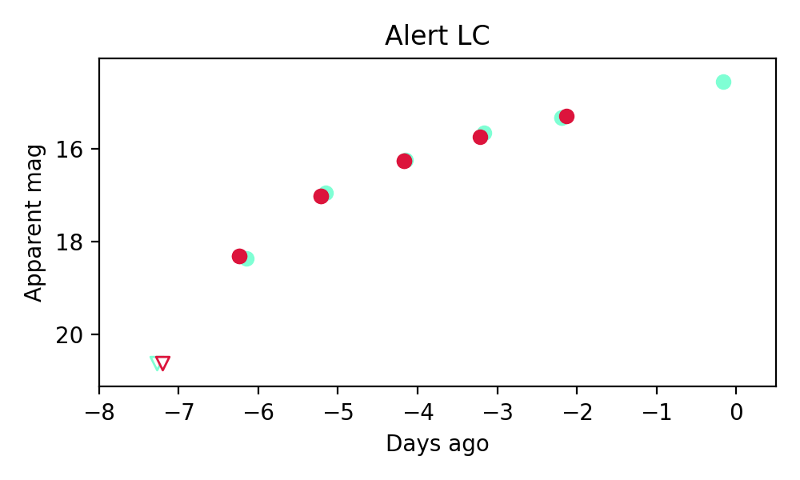
Consistent with synchrotron, g-r>0!
4. ZTF26aamusdq (FBOT?) [Back to Top] [Share] [Trigger Swift] [Fritz ] [Lasair ]RA, Dec: 249.16866, 12.00404 16h36m40.48s, 12d 0m14.54sGalactic (l, b): 28.55392, 35.29081 ext(g-r) = 0.076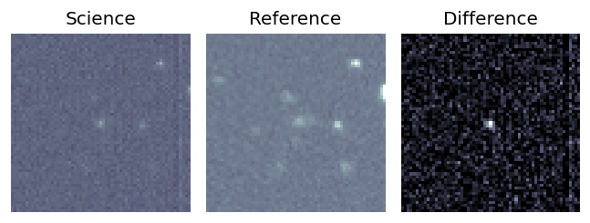
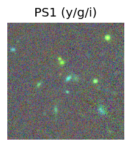
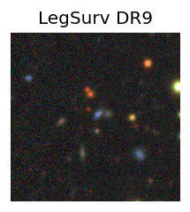
peak abs mag = -20.13 LegacySurvey: 1 sources in 3 arcsec Closest: d = 1.57 arcsec, 309.8 deg (east of north) photoz=0.1 (68% bounds 0.09, 0.12), type=SER peak abs mag = -18.83 (68% bounds -18.45, -19.2) 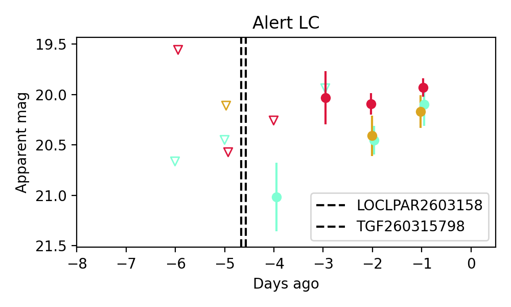
Consistent with synchrotron, g-r>0!
5. ZTF26aamuuhn (Afterglow?) [Back to Top] [Share] [Trigger Swift] [Fritz ] [Lasair ]RA, Dec: 231.04141, 26.66175 15h24m9.94s, 26d39m42.31sGalactic (l, b): 41.07453, 56.07838 ext(g-r) = 0.035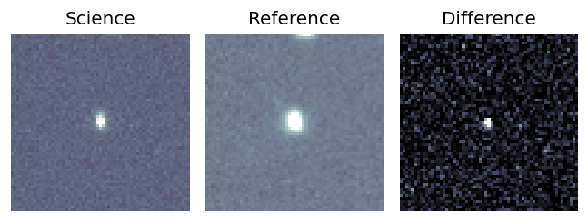
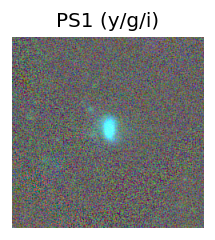
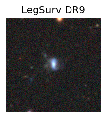
peak abs mag = -18.81 LegacySurvey: 1 sources in 3 arcsec Closest: d = 0.57 arcsec, 328.8 deg (east of north) photoz=0.06 (68% bounds 0.04, 0.08), type=SER peak abs mag = -17.8 (68% bounds -17.04, -18.59) 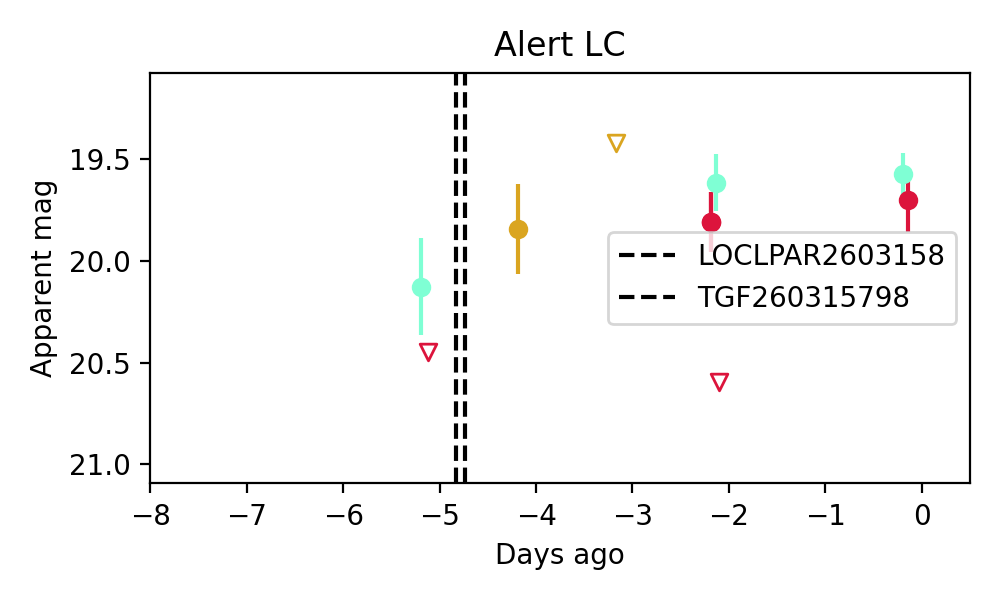
Consistent with synchrotron, g-r>0!
6. ZTF26aamvygg (FBOT?) [Back to Top] [Share] [Trigger Swift] [Fritz ] [Lasair ]RA, Dec: 253.02443, 12.58011 16h52m5.86s, 12d34m48.39sGalactic (l, b): 31.06716, 32.10406 ext(g-r) = 0.055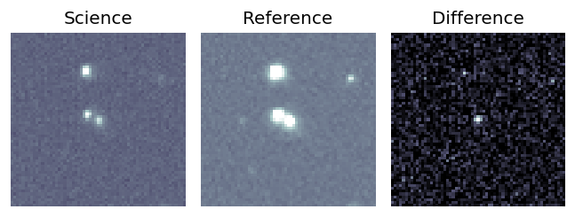
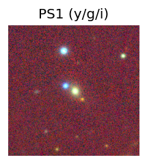
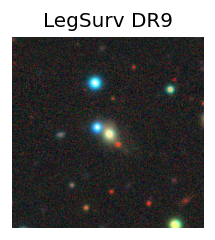
peak abs mag = -19.61 LegacySurvey: 1 sources in 3 arcsec Closest: d = 0.83 arcsec, 217.1 deg (east of north) photoz=0.14 (68% bounds 0.12, 0.15), type=SER peak abs mag = -19.44 (68% bounds -19.21, -19.71) 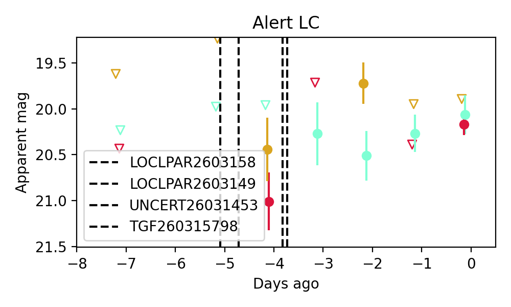
Consistent with synchrotron, g-r>0!
7. ZTF26aandeet (Afterglow?) [Back to Top] [Share] [Trigger Swift] [Fritz ] [Lasair ]RA, Dec: 151.61413, 25.30498 10h 6m27.39s, 25d18m17.94sGalactic (l, b): 206.18986, 53.11766 ext(g-r) = 0.036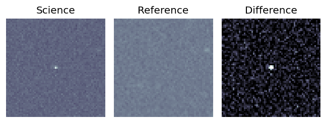
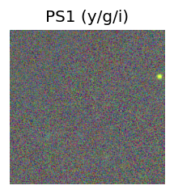
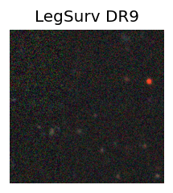
LegacySurvey: 1 sources in 3 arcsec Closest: d = 5.66 arcsec, 222.6 deg (east of north) photoz=0.91 (68% bounds 0.72, 1.06), type=REX peak abs mag = -25.02 (68% bounds -24.43, -25.44) 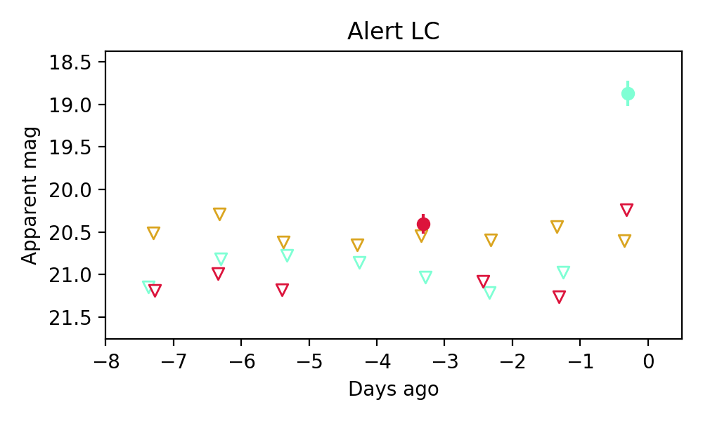
8. ZTF26aaneggi (Afterglow?) [Back to Top] [Share] [Trigger Swift] [Fritz ] [Lasair ]RA, Dec: 146.70152, -2.02704 9h46m48.36s, -2d-1m-37.35sGalactic (l, b): 238.64688, 36.86674 ext(g-r) = 0.059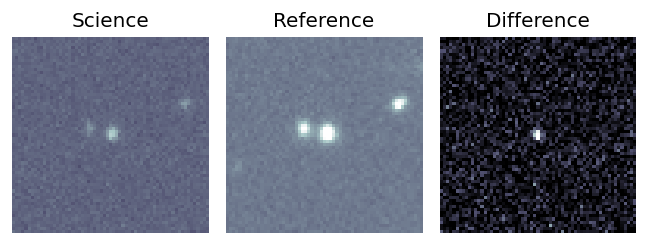
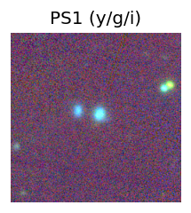
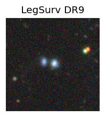
peak abs mag = -18.92 LegacySurvey: 1 sources in 3 arcsec Closest: d = 1.41 arcsec, 299.1 deg (east of north) photoz=0.1 (68% bounds 0.08, 0.11), type=SER peak abs mag = -18.72 (68% bounds -18.19, -19.02) 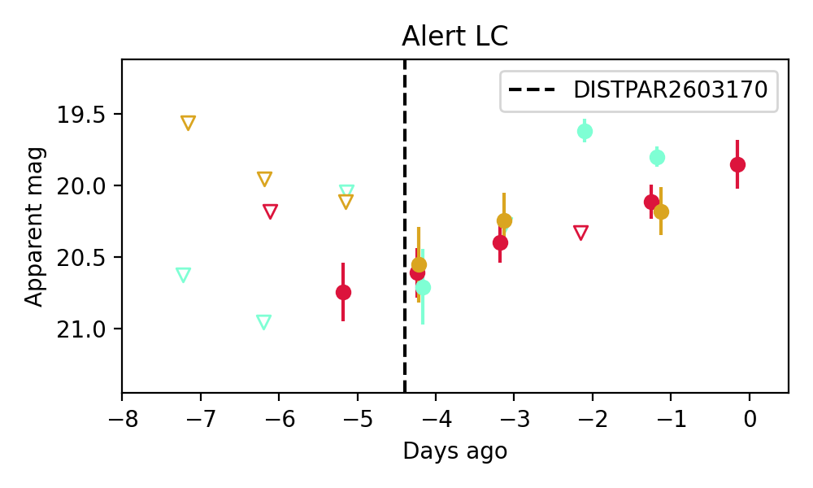
Consistent with synchrotron, g-r>0!
9. ZTF26aanfqhc (Afterglow?) [Back to Top] [Share] [Trigger Swift] [Fritz ] [Lasair ]RA, Dec: 236.66946, 12.14797 15h46m40.67s, 12d 8m52.69sGalactic (l, b): 21.69954, 46.37118 ext(g-r) = 0.062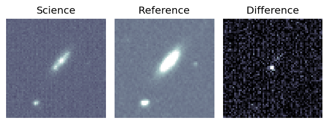
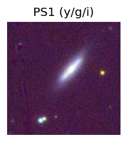
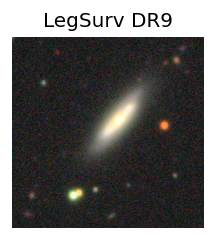
peak abs mag = -17.99 LegacySurvey: 1 sources in 3 arcsec Closest: d = 5.80 arcsec, 318.3 deg (east of north) photoz=0.03 (68% bounds 0.03, 0.04), type=SER peak abs mag = -17.05 (68% bounds -16.67, -17.54) 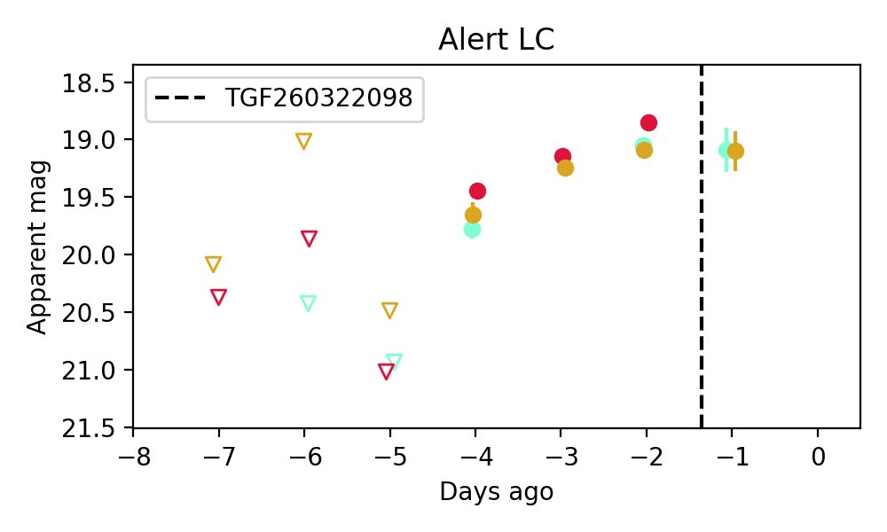
Consistent with synchrotron, g-r>0!
10. ZTF26aanlofr (FBOT?) [Back to Top] [Share] [Trigger Swift] [Fritz ] [Lasair ]RA, Dec: 128.65865, 20.3041 8h34m38.08s, 20d18m14.76sGalactic (l, b): 204.6635, 31.43285 WARNING: 1.55 deg from ecliptic plane ext(g-r) = 0.035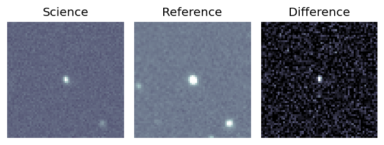
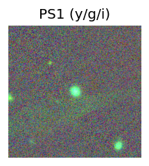
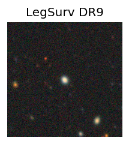
peak abs mag = -19.39 LegacySurvey: 1 sources in 3 arcsec Closest: d = 0.47 arcsec, 178.5 deg (east of north) photoz=0.17 (68% bounds 0.14, 0.23), type=REX peak abs mag = -19.82 (68% bounds -19.36, -20.61) 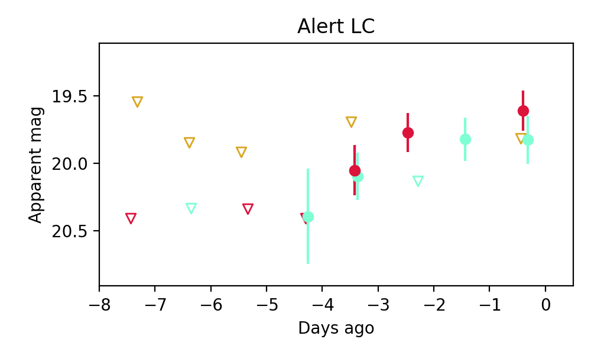
11. ZTF26aanncqg (Afterglow?) [Back to Top] [Share] [Trigger Swift] [Fritz ] [Lasair ]RA, Dec: 134.82609, 21.80274 8h59m18.26s, 21d48m9.87sGalactic (l, b): 205.23805, 37.36103 WARNING: 4.52 deg from ecliptic plane ext(g-r) = 0.033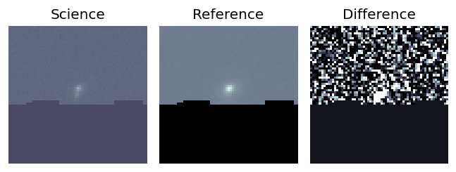
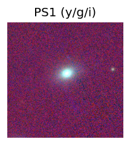
peak abs mag = -18.71 LegacySurvey: 1 sources in 3 arcsec Closest: d = 3.21 arcsec, 348.2 deg (east of north) photoz=0.09 (68% bounds 0.09, 0.1), type=SER peak abs mag = -18.75 (68% bounds -18.61, -18.9)
12. ZTF26aansxjk (FBOT?) [Back to Top] [Share] [Trigger Swift] [Fritz ] [Lasair ]RA, Dec: 182.7643, 42.04388 12h11m3.43s, 42d 2m37.96sGalactic (l, b): 149.29626, 72.9547 ext(g-r) = 0.015peak abs mag = -20.32 LegacySurvey: 1 sources in 3 arcsec Closest: d = 0.63 arcsec, 273.1 deg (east of north) photoz=0.17 (68% bounds 0.1, 0.29), type=EXP peak abs mag = -20.41 (68% bounds -19.02, -21.66)
13. ZTF26aaoixwc (Afterglow?) [Back to Top] [Share] [Trigger Swift] [Fritz ] [Lasair ]RA, Dec: 131.16231, 12.19103 8h44m38.95s, 12d11m27.71sGalactic (l, b): 214.48814, 30.58038 ext(g-r) = 0.044LegacySurvey: 1 sources in 3 arcsec Closest: d = 6.29 arcsec, 349.3 deg (east of north) photoz=0.8 (68% bounds 0.63, 1.06), type=REX peak abs mag = -24.88 (68% bounds -24.25, -25.64)
14. ZTF26aaojgwe (FBOT?) [Back to Top] [Share] [Trigger Swift] [Fritz ] [Lasair ]RA, Dec: 112.53773, 23.35827 7h30m9.05s, 23d21m29.76sGalactic (l, b): 195.59629, 18.55086 WARNING: 1.52 deg from ecliptic plane ext(g-r) = 0.057peak abs mag = -22.92 LegacySurvey: 1 sources in 3 arcsec Closest: d = 2.39 arcsec, 265.1 deg (east of north) photoz=0.22 (68% bounds 0.05, 0.48), type=PSF peak abs mag = -21.02 (68% bounds -17.75, -22.96)
15. ZTF26aaonhus (FBOT?) [Back to Top] [Share] [Trigger Swift] [Fritz ] [Lasair ]RA, Dec: 154.08727, -16.03574 10h16m20.94s, -16d-2m-8.67sGalactic (l, b): 257.24115, 32.74584 ext(g-r) = 0.078PS1: 1 source in 3 arcsec Closest: d = 0.75 arcsec photoz=0.12+/-0.01 peak abs mag = -19.74
16. ZTF26aaonwig (FBOT?) [Back to Top] [Share] [Trigger Swift] [Fritz ] [Lasair ]RA, Dec: 174.08375, 45.71462 11h36m20.10s, 45d42m52.63sGalactic (l, b): 156.73437, 66.17392 ext(g-r) = 0.026peak abs mag = -21.67 LegacySurvey: 1 sources in 3 arcsec Closest: d = 1.34 arcsec, 112.2 deg (east of north) photoz=0.68 (68% bounds 0.54, 0.83), type=DEV peak abs mag = -23.81 (68% bounds -23.21, -24.37)
17. ZTF26aaopbvx (FBOT?) [Back to Top] [Share] [Trigger Swift] [Fritz ] [Lasair ]RA, Dec: 256.38856, 43.34605 17h 5m33.26s, 43d20m45.78sGalactic (l, b): 68.35847, 36.97611 ext(g-r) = 0.031peak abs mag = -18.63 LegacySurvey: 1 sources in 3 arcsec Closest: d = 2.61 arcsec, 241.5 deg (east of north) photoz=0.17 (68% bounds 0.12, 0.22), type=EXP peak abs mag = -19.97 (68% bounds -19.12, -20.6) Consistent with synchrotron, g-r>0!
18. ZTF26aaopjwb (FBOT?) [Back to Top] [Share] [Trigger Swift] [Fritz ] [Lasair ]RA, Dec: 236.39364, 72.87622 15h45m34.47s, 72d52m34.38sGalactic (l, b): 107.86209, 38.73681 ext(g-r) = 0.037LegacySurvey: 1 sources in 3 arcsec Closest: d = 0.76 arcsec, 164.8 deg (east of north) photoz=0.15 (68% bounds 0.13, 0.17), type=SER peak abs mag = -19.52 (68% bounds -19.24, -19.88)
19. ZTF26aaoqccp (FBOT?) [Back to Top] [Share] [Trigger Swift] [Fritz ] [Lasair ]RA, Dec: 222.82467, 9.69404 14h51m17.92s, 9d41m38.53sGalactic (l, b): 6.98855, 56.80318 ext(g-r) = 0.035peak abs mag = -21.02 LegacySurvey: 1 sources in 3 arcsec Closest: d = 0.40 arcsec, 307.9 deg (east of north) photoz=0.12 (68% bounds 0.11, 0.12), type=SER peak abs mag = -20.85 (68% bounds -20.75, -20.93)
20. ZTF26aaoqceq (Afterglow?) [Back to Top] [Share] [Trigger Swift] [Fritz ] [Lasair ]RA, Dec: 254.60535, -5.37854 16h58m25.28s, -5d-22m-42.74sGalactic (l, b): 14.14479, 22.12995 ext(g-r) = 0.46
21. ZTF26aaoqelu (FBOT?) [Back to Top] [Share] [Trigger Swift] [Fritz ] [Lasair ]RA, Dec: 218.62863, -0.57147 14h34m30.87s, 0d-34m-17.30sGalactic (l, b): 348.95341, 52.83448 ext(g-r) = 0.04peak abs mag = -21.92 peak abs mag = -21.68 LegacySurvey: 1 sources in 3 arcsec Closest: d = 0.34 arcsec, 276.6 deg (east of north) photoz=0.23 (68% bounds 0.22, 0.25), type=SER peak abs mag = -21.72 (68% bounds -21.59, -21.89)
22. ZTF26aaoqemc (Afterglow?FBOT?) [Back to Top] [Share] [Trigger Swift] [Fritz ] [Lasair ]RA, Dec: 218.29879, -0.59218 14h33m11.71s, 0d-35m-31.85sGalactic (l, b): 348.51017, 53.02898 ext(g-r) = 0.046peak abs mag = -23.54 peak abs mag = -23.70 LegacySurvey: 1 sources in 3 arcsec Closest: d = 0.52 arcsec, 216.8 deg (east of north) photoz=0.13 (68% bounds 0.12, 0.15), type=SER peak abs mag = -23.56 (68% bounds -23.26, -23.78)
23. ZTF26aaoqeqy (FBOT?) [Back to Top] [Share] [Trigger Swift] [Fritz ] [Lasair ]RA, Dec: 220.31256, -0.5969 14h41m15.01s, 0d-35m-48.85sGalactic (l, b): 351.01433, 51.7181 ext(g-r) = 0.041peak abs mag = -5.93 LegacySurvey: 1 sources in 3 arcsec Closest: d = 0.76 arcsec, 103.9 deg (east of north) photoz=0.2 (68% bounds 0.16, 0.24), type=PSF peak abs mag = -23.08 (68% bounds -22.55, -23.59)
24. ZTF26aaoqmzv (Afterglow?) [Back to Top] [Share] [Trigger Swift] [Fritz ] [Lasair ]RA, Dec: 221.91437, 0.88542 14h47m39.45s, 0d53m7.52sGalactic (l, b): 354.53724, 51.7152 ext(g-r) = 0.055LegacySurvey: 1 sources in 3 arcsec Closest: d = 0.15 arcsec, 35.0 deg (east of north) photoz=0.22 (68% bounds 0.18, 0.26), type=PSF peak abs mag = -23.06 (68% bounds -22.66, -23.5)